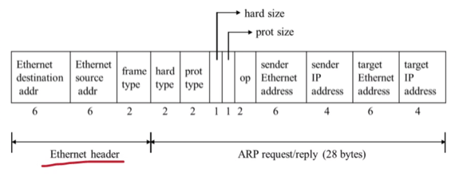

충남대학교 컴퓨터공학과 김상하 교수님의 "컴퓨터 네트워크" 강의를 필기한 내용입니다.
다소 잘못된 내용과 구어적 표현 이 포함되어 있을 수 있습니다.
Network Layer의 역할
- Internetworking : 다른 네트워크(뭐 예를 들면 네트워크 케이블로 직접 연결되어있지 않은)들 간 연결을 해줘 하나의 네트워크처럼 보이게 하는 것
- Addressing : 전 세계의 어느 곳이든 통신할 수 있게 하기 위해 기기들의 고유한 주소를 할당
- Routing : 패킷이 목적지에 도착하기까지의 최적의 경로를 설정하는 역할
- Packetizing : 상위계층으로부터 받은 데이터를 단편화해 패킷화하는 것
- Fragmentation : 이건 프레임을 받아 처리한 후 새로운 프레임으로 구성하는 것
- 패킷화랑은 다르다! - 라우터에서 데이터링크 계층으로부터 받은 프레임을 decapsulation하여 루트를 설정하고 다른 포트로 보내기 위해 다시 프레임화 하는 과정을 떠올리면 됨
Address Resolution Protocol
- 일단 너가 옛날에 가졌던 의문에 대한 답이 나오는데
- 물리주소와 논리주소쳬게를 별도로 분리하는 이유는 찐으로 고유한 값을 가지는 물리주소를 논리주소로도 이용하게 된다면 다른 네트워크로 빠져나가는 과정에서 문제가 생기게 된다
- 러프하게 생각해보면 모든 단말들의 물리주소가 고유하게 다르기 때문에 특정 주소의 단말로 가기 위해 라우팅 테이블로 다음 목적지를 알아내기 위해서는 이 모든 물리주소들에 대한 정보가 라우팅 테이블에 어느정도 들어있어야됨 - 근데 이게 불가능하기 때문인거같은뎅
- IP주소는 32bit이고 MAC주소는 48bit이라는거정도는 알고있어야되지 않나

- 위의 그림이 ARP에서 사용되는 프레임의 포맷이다
- 다른 프레임의 구조와 동일하게, 맨 처음 6바이트는 수신지 물리주소가 들어가게 되고, 그 다음 6바이트는 송신지 물리주소가 들어가게 되며 그 다음 2바이트에는 이 프레임의 타입을 지정하는 숫자가 들어가게 된다
- ARP에선 ARP Request, reply 모두 0x0806을 frame type에 넣어 이 프레임이 ARP를 위한 프레임임을 나타낸다
- ARP에서는 이전에 배웠다시피 Ethernet destination address에는 broadcast가 들어가게 된다
- 그리고 Hard type은 통신에 사용하고 있는 데이터 링크 계층의 프로토콜 종류를 나타내고, Ethernet인 경우에는 0x0001이 들어가게 된다
- 또한 Prot type에는 통신에 사용하고 있는 네트워크 계층의 프로토콜 종류를 나타내고, IP인 경우에는 0x0800이 들어가게 된다
- Hard & Prot size의 경우에는 데이터링크와 네트워크 계층에서 각각의 프로토콜에 사용될 주소의 길이를 1바이트에 저장하게 된다 - Ethernet인 경우에는 주소의 길이는 6바이트이므로 0x06이 들어가게 되고 IP의 경우에는 주소의 길이는 4바이트이므로 0x04가 들어가게 된다
- Op필드의 경우에는 어떤 패킷인지 나타내는 숫자가 들어가게 되는데, ARP request인 경우에는 1, reply인 경우에는 2, RARP(물리주소로 논리주소 알아내는 프로토콜) request인 경우에는 3, reply인 경우에는 4가 들어가게 된다
- 마지막 4개의 필드에는 그림에 보이는것처럼 각각 송수신지의 물리주소와 논리주소가 들어가게 된다
- ARP를 통해 물리주소를 알아낸 뒤에는 해당 주소를 캐쉬에 넣어놓고 추가적인 ARP 과정 없이 바로 보내게 된다
- 니가 아는 그 캐쉬 맞다 - 캐쉬 테이블에는 최근에 통신을 한 대상에 대한 물리주소가 저장되어 있어 IP만 가지고 선형탐색과정 없이 아주 빠른 속도로 물리주소를 알아낼 수 있음
- 따라서 ARP를 하기 전에 먼저 캐쉬 테이블에 이미 있나를 먼저 확인하고 없다면 ARP가 진행되는 방식인 것
- 물리주소를 찾은 경우 - Completed인 경우에는 캐쉬 테이블에 20분간 저장을 하게 되고 그렇지 않은 Incompleted인 경우에는 3분간 저장을 하게 된다
- 주소를 캐쉬에 넣어놓는 작업은 송수신자만 하는게 아니다 - ARP Request를 받은 모든 노드가 이걸 통해 송신자의 IP와 MAC을 매칭시킬 수 있기 때문에 자신한테 온 ARP Request가 아니라 하더라도 송신자의 IP와 MAC을 캐쉬에 넣어놓게 된다
- 실습때 구현할때 request와 reply에 패킷에 저장된 내용의 순서가 바뀌는 것에 유의해라
- 응답을 보낼때는 받은 패킷의 송신자가 응답 패킷의 수신자가 되므로